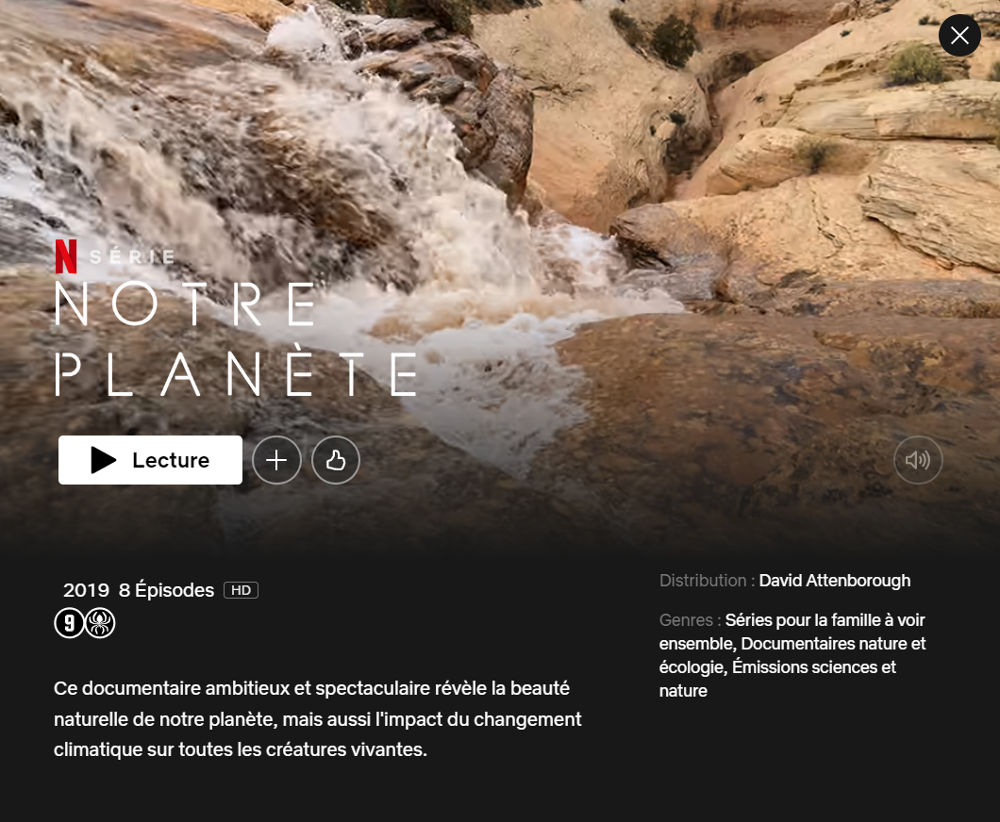

Dans cette série documentaire divisée en 8 épisodes, on y découvre les enjeux et les causes du réchauffement climatique. À travers ces épisodes nous apprenons que la surconsommation est la première cause du réchauffement : surexploitation des terres, surpêche,... On nous y montre des paysages fantastiques, des scènes incroyables qui m'ont touché de par leurs beautés et qui ont éveillé en moi l'envie de protéger cela. De cette série d'épisodes j'y ai donc tiré une analyse. Quelle habitude ai-je, qui peut être considéré comme de la surconsommation et donc une cause du réchauffement climatique.
Je passe énormément de temps derrière un écran à consommer un tas de vidéos, films, séries, ... Cela nécessite une quantité d'énergie négligeable si j'étais le seul à être dans cette situation mais la majorité des personnes ont cette mauvaise habitude. Cela représente donc une importante consommation d'énergie liée au divertissement. Les jeunes passent leur temps sur Youtube, sur tiktok, sur instagram, ... et le stockage du contenue de ces plateformes néccesite une grande quantité d'énergie. J'appèlerais donc cela "la pollution du divertissement"
C'est une mauvaise habitude que je n'ai plus mais que je m'en Sionne tout de même car elle touche beaucoup de monde. Les modes éphémères ont pour conséquence une surproduction d'habille et donc de matière (coton, laine.....). La surexploitation des terres est un véritable désastre écologique car pour produire il faut tout d'abord déforester et donc détruire des écosystèmes mais aussi exploiter le sol qui s'appauvrit rapidement.
Acheter écoresponsable est une chose que je fais depuis peu de temps et avant cela je ne pensais pas assez avant d'acheter. Je ne me demandais pas ce qu'il a fallu pour produire ce que j'achète. Acheter un fruit qui a été importé du Brésil et qui a donc énormément pollué pour arriver dans nos magasins était-il responsable de ma part ?Aujourd'hui je vérifie la provenance de mes achats pour ne plus soutenir cette importation massive qui n'a pas de sens.
Un problème bien connu aujourd'hui mais pourtant loin d'être réglé. La surproduction de plastique est un véritable problème climatique, au point où nous sommes arrivé au stade d'avoir une ile de plastique sur terre. Les bonnes habitudes sont très simples, il faut éviter d'acheter des produits emballer dans du plastique. Il existe des solutions pour cela comme le fait de faire nos courses avec nos propres sacs en tissu pour les fruits et les légumes, les emballages en cartons ou en plastique recyclé.
En tant que futur enseignant je dois être sensible au sujet du réchauffement climatique car c'est un enjeu majeur pour nous et surtout pour les générations futures. Il faut donc sensibiliser les jeunes et leur transmettre les bonnes habitudes à adopter. On doit leur faire comprendre qu'on ne doit pas passer ses journées derrière un écran, leur faire comprendre qu'on n'achète pas des habilles toutes les semaines pour les mettre une fois ou deux et leur apprendre à réfléchir sur la provenance des produits qu'ils achètent.
J'ai choisi de baser mes recherches sur les écoles écolo et je suis tombé sur Green school Bali. Cette école est un parfait exemple de l'enseignement de demain car elle est basée sur la responsabilisation des jeunes vis-à-vis de l'écologie qui est placée comme sujet central. Elle montre aux jeunes comment adopter une façon responsable de vivre et de consommer. Elle les fait réfléchir sur les différentes façons de produire le moins de CO2 possible. Les jeunes deviennent donc responsables mais aussi ingénieux car l'école leur donne l'opportunité de chercher des solutions pour améliorer notre avenir.
Je pense que oui, c'est possible en adaptant certaines choses telles que la structure de l'école qui ne pourra probablement pas être en bambou. Il est tout à fait possible d'avoir des écoles similaires, qui font travailler les élèves dans des potagers, qui les font réfléchir sur les problématiques environnementales et sur les changements qui doivent survenir pour les régler.
Les écoles écoresponsables sont de plus en plus favorisées par la ville de Bruxelles qui récompense les meilleures d'entre elles avec le label éco-schools. Cela encourage donc les écoles à s'engager dans cette voie. Peut-être que d'ici quelques années, la majorité des écoles bruxelloise adoptera l'écoresponsabilité comme principale objective.
Dans un premier temps, quel lien entre les voitures électriques et l'enseignement ? C'est un événement d'actualité depuis un certain nombre d'années et celui-ci concerne toutes les personnes qui possèdent un véhicule dont les enseignants. Il est donc intéressant de se demander si les véhicules électriques sont réellement plus écologiques que les véhicules à combustion.
Une voiture électrique est beaucoup plus polluante à la construction qu'un véhicule à combustion. Le moteur et la batterie contiennent des métaux rares qui sont très polluants à l'extraction ce qui leur donne un premier point négatif. En supposant que le véhicule roule grace à la production d'énergie verte, il faudrait un certain nombre d'années pour que celui-ci devienne réellement intéressant.
Dans des pays tels que l'Allemagne, les USA ou la Chine dont l'énergie provient principalement de gaz ou de charbon, les voitures électriques sont inutiles car cela revient à déplacer le problème. Il y a donc des conditions à respecter pour que ce type de véhicule soit réellement une solution contre le réchauffement climatique. Un bon exemple serait la France dont l'énergie provient majoritairement du nucléaire et donc qui ne produit pas de CO2. Dans ce pays, ce type de véhicule serait intéressant puisqu'il permettrait de réduire la production de CO2.
À Bruxelles, les véhicules électriques ne sont pas réellement intéressants puisque nous avons énormément de moyen de transport plus écologique à notre disposition. De plus, la ville est adaptée à l'utilisation des vélos, trottinette, ... car celle-ci est assez petite et contient un bon nombre de pistes cyclables. La solution locale serait donc de rouler à vélo comme nos voisins neerlandais. Cependant, puisque 60% de notre énergie produite est verte, les voitures électriques restent tout de même une solution pour les personnes qui en ont le réel besoin.
--SOURCE--
En effet cela pourrait avoir une influence positive sur les jeunes car ils peuvent enfin voir une action concrète du pays pour lutter contre le réchauffement climatique.